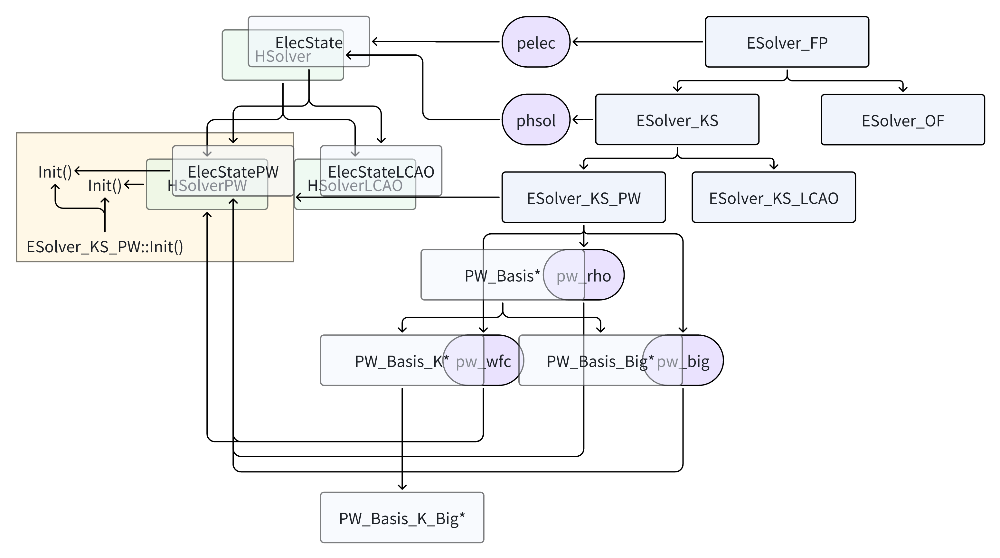
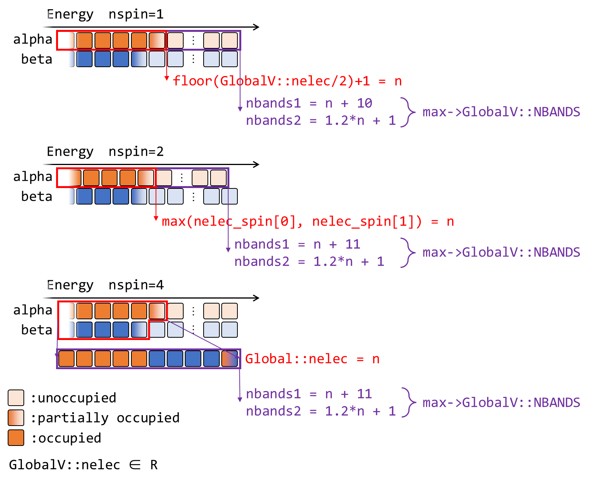
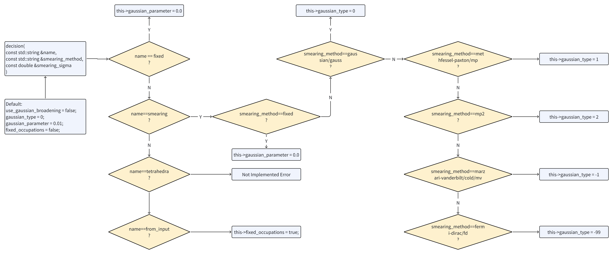
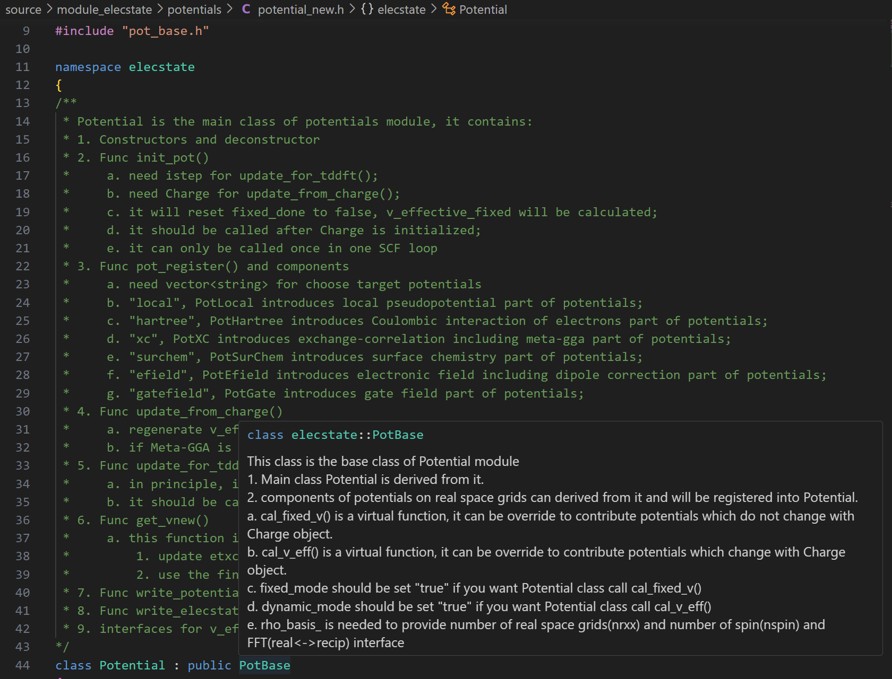

Introduction to ABACUS: Path to PW calculation - Part 7
作者：黄一珂，邮箱：huangyk@aisi.ac.cn
审核：陈默涵，邮箱：mohanchen@pku.edu.cn
飞书链接：Introduction to ABACUS: Path to PW calculation - Part 7
📃写在前面
- 不脱离代码——避免读者看完手册后对代码没有一丁点概念
- 不堆砌代码解释——避免平庸的代码解释，努力兼顾拉近读者和代码距离的同时，做到提纲挈领，不逐行复制代码后进行停留在代码语义上的解释
Driver
Driver::atomic_world()
Driver::driver_run()
多层继承：Init() functions in esolver class
终于来到和原本 p_esolver 相同的类的成员函数 Init()：
template <typename FPTYPE, typename Device>
void ESolver_KS_PW<FPTYPE, Device>::Init(Input& inp, UnitCell& ucell)
{
ESolver_KS<FPTYPE, Device>::Init(inp, ucell); // <- we just leave from here
// Initialize HSolver
if (this->phsol == nullptr)
{
this->phsol = new hsolver::HSolverPW<FPTYPE, Device>(this->pw_wfc, &this->wf);
}
// Initialize ElecState
if (this->pelec == nullptr)
{
this->pelec = new elecstate::ElecStatePW<FPTYPE, Device>(this->pw_wfc, &(this->chr), &(this->kv), this->pw_rho, this->pw_big);
}
// Initialize the charge density
this->pelec->charge->allocate(GlobalV::NSPIN);
this->pelec->omega = GlobalC::ucell.omega;
// Initialize the potential
if (this->pelec->pot == nullptr)
{
this->pelec->pot = new elecstate::Potential(this->pw_rho, &GlobalC::ucell, &(GlobalC::ppcell.vloc), &(this->sf), &(this->pelec->f_en.etxc), &(this->pelec->f_en.vtxc));
}
this->Init_GlobalC(inp, ucell);
if (GlobalV::ocp) this->pelec->fixed_weights(GlobalV::ocp_kb);
}
Initialization of HSolverPW object
Constructor
首先来到按照注释划分的第一部分“Initialize HSolver”（line 6，HSolver 就是求解体系哈密顿量的求解器）：
template <typename FPTYPE, typename Device>
void ESolver_KS_PW<FPTYPE, Device>::Init(Input& inp, UnitCell& ucell)
{
ESolver_KS<FPTYPE, Device>::Init(inp, ucell);
// Initialize HSolver
if (this->phsol == nullptr)
{
this->phsol = new hsolver::HSolverPW<FPTYPE, Device>(this->pw_wfc, &this->wf);
}
其实 phsol（此处命名逻辑为 p 代表 Pointer，hsol 为 HSolver 的缩写）并非是 ESolver_KS_PW 类中数据成员，而是在 ESolver_KS 中，这意味着 ESolver_KS 的派生类均有可能使用这一数据成员。稍加搜索，发现 ESolver_KS_LCAO::Init() 中也有类似操作：
void ESolver_KS_LCAO::Init(Input& inp, UnitCell& ucell)
{
....
// init HSolver
if (this->phsol == nullptr)
{
this->phsol = new hsolver::HSolverLCAO(this->LOWF.ParaV);
this->phsol->method = GlobalV::KS_SOLVER;
}
另一点可以预料的是，在基类 ESolver_KS 的声明中，phsol 起始被声明为基类 HSolver 类对象，而非直接地 HSolverPW 这一派生类对象，这一操作再次体现了 C++ 的多态编程思路。具体在当前 Init 函数中，phsol 被分配内存时调用的 HSolverPW 类构造函数，其形参表中，pw_wfc 是属于 PW_Basis_K（以及其派生类 PW_Basis_K_Big）类对象，继承自 ESolver_KS。wf 是 wavefunc 类对象，也继承自 ESolver_KS，这体现了仅对于 ESolver_KS 层级而言需要带有 k 点的平面波波函数，以及波函数的存储类，而再上一级 ESolver_FP 则不一定需要这两者。平行而言 ESolver_OF 也属于“FP”，但在 ESolver_FP 的派生类 ESolver_OF 中，丝毫没有关于平面波波函数的数据成员：

派生类 HSolverPW 的构造函数其结构十分简单：
template <typename FPTYPE, typename Device>
HSolverPW<FPTYPE, Device>::HSolverPW(ModulePW::PW_Basis_K* wfc_basis_in, wavefunc* pwf_in)
{
this->classname = "HSolverPW";
this->wfc_basis = wfc_basis_in;
this->pwf = pwf_in;
this->diag_ethr = GlobalV::PW_DIAG_THR;
}
，即将 ESolver_KS::pw_wfc 复制进 HSolverPW 的数据成员 wfc_basis，ESolver_KS::wf 到 HSolverPW::pwf。
Initialization of ElecState object
Constructor
接下来来到 ESolver_KS_PW::Init()“第二部分”中 ElecState 类对象的初始化。
template <typename FPTYPE, typename Device>
void ESolver_KS_PW<FPTYPE, Device>::Init(Input& inp, UnitCell& ucell)
{
....
// init ElecState,
if (this->pelec == nullptr)
{
this->pelec = new elecstate::ElecStatePW<FPTYPE, Device>(this->pw_wfc,
&(this->chr),
&(this->kv),
this->pw_rho,
this->pw_big);
}
和 phsol 同样地，这一次 pelec 是继承自 ESolver_FP 类（因此说明 FP 不仅 KS 派生类需要电荷这一物理量），但 pelec 实际被声明为基类 ElecState 的指针，在 ESolver_KS_PW::Init() 中被分配以其派生类 ElecStatePW 的内存空间（同样地也有 ElecStateLCAO 派生类等），因此调用派生类构造函数：
template<typename FPTYPE, typename Device>
ElecStatePW<FPTYPE, Device>::ElecStatePW(ModulePW::PW_Basis_K *wfc_basis_in, Charge* chg_in, K_Vectors *pkv_in, ModulePW::PW_Basis* rhopw_in, ModulePW::PW_Basis_Big* bigpw_in) : basis(wfc_basis_in)
{
this->classname = "ElecStatePW";
this->init_ks(chg_in, pkv_in, pkv_in->nks, rhopw_in, bigpw_in);
}
在该构造函数的函数体外初始化了成员变量 basis 以 ESolver_KS::pw_wfc。除了设置 ElecStatePW::classname 这一数据成员的具体值外，调用 ElecState::init_ks() 函数（显然继承自基类）。

ElecState::init_ks()
void ElecState::init_ks(Charge* chg_in, // pointer for class Charge
const K_Vectors* klist_in,
int nk_in,
ModulePW::PW_Basis* rhopw_in,
const ModulePW::PW_Basis_Big* bigpw_in)
{
this->charge = chg_in;
this->charge->set_rhopw(rhopw_in);
this->klist = klist_in;
this->bigpw = bigpw_in;
// init nelec_spin with nelec and nupdown
this->init_nelec_spin();
// autoset and check GlobalV::NBANDS, nelec_spin is used when NSPIN==2
this->cal_nbands();
// initialize ekb and wg
this->ekb.create(nk_in, GlobalV::NBANDS);
this->wg.create(nk_in, GlobalV::NBANDS);
}
Link Charge* ElecState::charge to Charge ESolver_FP::chg
⚠ 注意在 ElecState/ElecStatePW 类中的数据成员 charge 是 Charge 类指针，被赋值为 ESolver_FP 类的 Charge 类对象，即使得 ElecState 类的 Charge 类指针指向 ESolver_FP 的 chr 数据成员。
namespace ModuleESolver
{
class ESolver_FP : public ESolver
{
public:
....
elecstate::ElecState* pelec = nullptr;
Charge chr;
ModuleSymmetry::Symmetry symm;
....
K_Vectors kv;
因此
this->charge = chg_in;
this->charge->set_rhopw(rhopw_in);
的意义在于由 ElecState::init_ks() 作为被包含在 ESolver_FP（或说 ESolver）对象中的 Charge 类对象 chg 和 PW_Basis 类 pw_rho 的连接。（是否冗余？）
变量 ElecState::klist、ElecState::bigpw、ElecState::rhopw 传入的实参也类似，同样来自于 ESolver_FP。
void Charge::set_rhopw(ModulePW::PW_Basis* rhopw_in)
{
this->rhopw = rhopw_in;
}
🤔在变量命名过程中应当注意避免随意
| context | 用于展开电荷的 PW_Basis 类指针 | 包含 Big FFT grid 的用于电荷展开的 PW_Basis_Big 类指针 |
|---|---|---|
ElecState 数据成员 |
bigpw |
|
ElecState::init_ks() |
rhopw_in |
bigpw_in |
ESolver_KS_PW::Init() |
pw_rho |
pw_big |
ESolver_FP 数据成员 |
pw_rho |
pw_big |
Charge 数据成员 |
rhopw |
Calculate numbers of electrons in different spin channels
ElecState::init_nelec_spin() 函数的调用为 this->nelec_spin 赋值，其中 GlobalV::nupdown 的意义已经在（Introduction to ABACUS: Path to PW calculation - Part 2 ）介绍，为 up 和 down spin 的差值：
void ElecState::init_nelec_spin()
{
this->nelec_spin.resize(GlobalV::NSPIN);
if (GlobalV::NSPIN == 2)
{
// in fact, when TWO_EFERMI(nupdown in INPUT is not 0.0), nelec_spin will be fixed.
this->nelec_spin[0] = (GlobalV::nelec + GlobalV::nupdown) / 2.0;
this->nelec_spin[1] = (GlobalV::nelec - GlobalV::nupdown) / 2.0;
}
}
Get number of bands to solve: ElecState::cal_nbands()
ElecState::cal_nbands() 函数的调用为 GlobalV::NBANDS（需要计算的能带数量）这一全局变量赋值或对通过 INPUT 文件中 nbands 关键词进行赋值的值进行合理性检查。对于未在 INPUT 文件中进行赋值的情况，则在此函数之前仍然保持值为 0，之后的赋值策略为：
void ElecState::cal_nbands()
{
....
if (GlobalV::LSPINORB == 1)
occupied_bands = static_cast<double>(GlobalV::nelec);
/* it can only be the case of uks, but if so, the following method for calculating NBANDS will make this variable meaningless cuz never used! */
if ((occupied_bands - std::floor(occupied_bands)) > 0.0)
{
occupied_bands = std::floor(occupied_bands) + 1.0; // mohan fix 2012-04-16
}
....
ModuleBase::GlobalFunc::OUT(GlobalV::ofs_running, "occupied bands", occupied_bands);
if (GlobalV::NBANDS == 0)
{
if (GlobalV::NSPIN == 1)
{
const int nbands1 = static_cast<int>(occupied_bands) + 10;
const int nbands2 = static_cast<int>(1.2 * occupied_bands) + 1;
GlobalV::NBANDS = std::max(nbands1, nbands2);
if (GlobalV::BASIS_TYPE != "pw")
GlobalV::NBANDS = std::min(GlobalV::NBANDS, GlobalV::NLOCAL);
}
else if (GlobalV::NSPIN == 4)
{
const int nbands3 = GlobalV::nelec + 20;
const int nbands4 = static_cast<int>(1.2 * GlobalV::nelec) + 1;
GlobalV::NBANDS = std::max(nbands3, nbands4);
if (GlobalV::BASIS_TYPE != "pw")
GlobalV::NBANDS = std::min(GlobalV::NBANDS, GlobalV::NLOCAL);
}
else if (GlobalV::NSPIN == 2)
{
/* max() is because the keyword nupdown can either be positive or negative */
const double max_occ = std::max(this->nelec_spin[0], this->nelec_spin[1]);
const int nbands3 = static_cast<int>(max_occ) + 11;
const int nbands4 = static_cast<int>(1.2 * max_occ) + 1;
GlobalV::NBANDS = std::max(nbands3, nbands4);
if (GlobalV::BASIS_TYPE != "pw")
GlobalV::NBANDS = std::min(GlobalV::NBANDS, GlobalV::NLOCAL);
}
ModuleBase::GlobalFunc::AUTO_SET("NBANDS", GlobalV::NBANDS);
}

🤔思考时间 Is there any differences bewteen the ways to assign default values for number of bands to calculate in ABACUS and Quantum ESPRESSO?
回溯：GlobalV::nelec 的值从 ESolver_KS::Init() 调用时确定（具体调用 UnitCell::cal_nelec()，Introduction to ABACUS: Path to PW calculation - Part 5）。
//module_base/global_variable.cpp
GlobalV::NBANDS = 0;
//module_io/input.cpp
INPUT.nbands = 0;
//module_io/input.cpp::Read()
else if (strcmp("nbands", word) == 0) // number of atom bands
{
read_value(ifs, nbands);
}
//module_io/input_conv.cpp
GlobalV::NBANDS = INPUT.nbands;
对于赋值的情况则需要对其合理性进行检查，一方面是对使用 smearing 时候的 nbands 数量（对于能级简并度较高的情况，SCF 过程中能级的变化将引起能量的变化剧烈，因此可以通过 smearing 方法弥散最高占据能级附近的电子布居，使得能量变化剧烈程度减少。smearing 的具体参照一方面可以由独立费米子体系所遵循 Fermi-Dirac 统计借鉴而来，或直接采用 Gauss 分布。控制 smearing 的参数取值越大，电子偏离“0 温”越严重，但可以加速电子迭代的收敛。实际计算时，一般对半导体或者绝缘体、或者有 gap 的系统，可以不取 smearing，或者 smearing 不起作用；如果对金属系统，可以适当取一点 smearing 加速收敛，但太大容易引起结果不准确）：
void ElecState::cal_nbands()
{
....
if (GlobalV::NBANDS == occupied_bands)
{
if (Occupy::gauss())
{
ModuleBase::WARNING_QUIT("ElecState::cal_nbands", "for smearing, num. of bands > num. of occupied bands");
}
}
Occupy 是在 input_conv 被调用时所赋值的对象，
//module_io/input_conv.cpp line 589
Occupy::decision(INPUT.occupations, INPUT.smearing_method, INPUT.smearing_sigma);

而 Occupy::gauss() 的功能仅仅为：
class Occupy
{
public:
....
static const bool& gauss(void) {return use_gaussian_broadening;}
剩余部分：
void ElecState::cal_nbands()
{
....
if (GlobalV::NBANDS == 0) {....}
else
{
if (GlobalV::NBANDS < occupied_bands)
ModuleBase::WARNING_QUIT("unitcell", "Too few bands!");
if (GlobalV::NSPIN == 2)
{
if (GlobalV::NBANDS < this->nelec_spin[0])
{
ModuleBase::GlobalFunc::OUT(GlobalV::ofs_running, "nelec_up", this->nelec_spin[0]);
ModuleBase::WARNING_QUIT("ElecState::cal_nbands", "Too few spin up bands!");
}
if (GlobalV::NBANDS < this->nelec_spin[1])
{
ModuleBase::GlobalFunc::OUT(GlobalV::ofs_running, "nelec_down", this->nelec_spin[1]);
ModuleBase::WARNING_QUIT("ElecState::cal_nbands", "Too few spin down bands!");
}
}
}
Others
this->pelec->charge->allocate(GlobalV::NSPIN);
this->pelec->omega = GlobalC::ucell.omega;
第二行将当前晶胞体积赋值给 ElecState 指针中该成员变量，第一行则为 Charge* ElecState::charge 申请内存空间：
void Charge::allocate(const int& nspin_in)
{
ModuleBase::TITLE("Charge", "allocate");
this->nrxx = this->rhopw->nrxx; // number of distributed real space grid points
this->nxyz = this->rhopw->nxyz; // total number of real space grid points
this->ngmc = this->rhopw->npw; // number of distributed planewaves
if (allocate_rho == true)
{
this->destroy();
allocate_rho = false;
}
assert(allocate_rho == false);
this->nspin = nspin_in;
....// standard output omitted here
rho = new double*[nspin];
rhog = new std::complex<double>*[nspin];
rho_save = new double*[nspin];
rhog_save = new std::complex<double>*[nspin];
if (elecstate::get_xc_func_type() == 3 || elecstate::get_xc_func_type() == 5)
{
kin_r = new double*[nspin]; kin_r_save = new double*[nspin];
}
//spin-by-spin (sbs)
for (int is = 0; is < nspin; is++)
{
rho[is] = new double[nrxx]; // charge density on distributed realspace grid sbs
rhog[is] = new std::complex<double>[ngmc]; // charge density in reciprocal space sbs
rho_save[is] = new double[nrxx]; // backup of rho
rhog_save[is] = new std::complex<double>[ngmc]; // backup of rhog
....// initialize above four arrays of present spin with zeros
if (elecstate::get_xc_func_type() == 3 || elecstate::get_xc_func_type() == 5)
{
kin_r[is] = new double[nrxx]; kin_r_save[is] = new double[nrxx];
....// initialize above two arrays of present spin with zeros
}
}
.... // memory record omitted
this->rho_core = new double[nrxx]; // core charge in real space
this->rhog_core = new std::complex<double>[ngmc]; // reciprocal core charge
....// initialize above two arrays of present spin with zeros
.... // memory record omitted
this->allocate_rho = true;
}
Initialization of Potential
template <typename FPTYPE, typename Device>
void ESolver_KS_PW<FPTYPE, Device>::Init(Input& inp, UnitCell& ucell)
{
....
// Initialize the potential.
if (this->pelec->pot == nullptr)
{
this->pelec->pot = new elecstate::Potential(this->pw_rho,
&GlobalC::ucell,
&(GlobalC::ppcell.vloc),
&(this->sf),
&(this->pelec->f_en.etxc),
&(this->pelec->f_en.vtxc));
}
接下来将各与势能相关变量的内存地址拉取到 ElecStatePW* ESolver_KS_PW::pelec 的指针成员 Potential* pot 下（继承自基类 ElecState），Potential 类构造函数被调用，初始化 pot 指针：
namespace elecstate
{
Potential::Potential(const ModulePW::PW_Basis* rho_basis_in, const UnitCell* ucell_in, const ModuleBase::matrix* vloc_in, Structure_Factor* structure_factors_in, double* etxc_in, double* vtxc_in): ucell_(ucell_in), vloc_(vloc_in), structure_factors_(structure_factors_in), etxc_(etxc_in), vtxc_(vtxc_in)
{
this->rho_basis_ = rho_basis_in;
this->fixed_mode = true;
this->dynamic_mode = true;
// allocate memory for Potential.
this->allocate();
}
在 Potential 构造函数的形参表中，我们发现了从未出现过的 ModuleBase::matrix* GlobalC::ppcell 变量，以及 fenergy ElecState::f_en 变量，这些变量以内存地址形式存入 ElecStatePW* ESolver_KS_PW::pelec 中。对于 Potential::allocate() 函数，则不出例外地为数组申请内存空间：
void Potential::allocate()
{
ModuleBase::TITLE("Potential", "allocate");
int nrxx = this->rho_basis_->nrxx;
if (nrxx == 0) return;
this->v_effective_fixed.resize(nrxx);
this->v_effective.create(GlobalV::NSPIN, nrxx);
.... // memory record omitted
if (elecstate::get_xc_func_type() == 3 || elecstate::get_xc_func_type() == 5)
{
this->vofk_effective.create(GlobalV::NSPIN, nrxx);
.... // memory record omitted
}
if (GlobalV::device_flag == "gpu") {....}
else {
if (GlobalV::precision_flag == "single") {....}
else {
this->d_v_effective = this->v_effective.c;
this->d_vofk_effective = this->vofk_effective.c;
}
// There's no need to allocate memory for double precision pointers while in a CPU environment
}
}
// module_elecstate/potentials/potential_new.h
class Potential : public PotBase
{
....//google-style indent?
private:
....
std::vector<double> v_effective_fixed; //<-line 154
ModuleBase::matrix v_effective; // mixed use of std::vector and self-built matrix?
Potential 和其基类 PotBase 拥有漂亮的类注释文档（link）：

Initialization of rest parts of GlobalC
GlobalC 和 GlobalV 是两个特殊的类，如第一版开发者文档所提到，此两种类的收益为避免过大的形参表，但负向收益为带来对两类中全局变量意外覆盖读写的隐患，因此在 ABACUS 的未来版本中，会逐步弃用 GlobalC 和 GlobalV，转而使用对象：利用高度且合理的封装方式，每次传入对象，对象包含各自相关的数据成员和函数。但就当前而言，GlobalC 提供了一些全局类。此处剩余的一些全局类申请内存空间、被初始化。
template <typename FPTYPE, typename Device>
void ESolver_KS_PW<FPTYPE, Device>::Init_GlobalC(Input& inp, UnitCell& cell)
{
if (this->psi != nullptr)
delete this->psi;
this->psi = this->wf.allocate(this->kv.nks, this->kv.ngk.data(), this->pw_wfc->npwk_max);
// init pseudopotential
GlobalC::ppcell.init(GlobalC::ucell.ntype, &this->sf, this->pw_wfc);
// initalize local pseudopotential
GlobalC::ppcell.init_vloc(GlobalC::ppcell.vloc, this->pw_rho);
// Initalize non local pseudopotential
GlobalC::ppcell.init_vnl(GlobalC::ucell);
GlobalC::ppcell.cal_effective_D();
// create GlobalC::ppcell.tab_at , for trial wave functions.
this->wf.init_at_1(&this->sf);
// Initial start wave functions
this->wf.wfcinit(this->psi, this->pw_wfc);
// denghui added 20221116
this->kspw_psi = GlobalV::device_flag == "gpu" || GlobalV::precision_flag == "single"
? new psi::Psi<std::complex<FPTYPE>, Device>(this->psi[0])
: reinterpret_cast<psi::Psi<std::complex<FPTYPE>, Device>*>(this->psi);
....//memory record omitted here
}
📝笔者的话 这里有一个有趣的东西是
kspw_psi（在求力部分还有__kspw_psi）。有兴趣的读者可以自行查看对于 gpu 或者单精度情况，在调用的psi构造函数中发生了什么。 实际上，kspw_psi支持了异构计算，而psi，如 esolver_fp.h 声明中，实际上只为psi::Psi<std::complex<double>, Device = psi::DEVICE_CPU>*类指针。因此真正计算架构-dependent 的是kspw_psi。ESolver_KS_PW为支持异构计算，整个类为模板类。在 psi 被分配内存空间后，为kspw_psi赋予了其数据的可达性（accessibility），reinterpret_cast或者复制内容。
Psi
Psi 是 ABACUS 中一类特殊的数据结构，用于存储波函数（平面波基函数系数）信息。其包含如下数据成员：
namespace psi
{
template <typename T, typename Device = DEVICE_CPU> class Psi
{
public:
int npol = 1;
....
private:
T* psi = nullptr; // avoid using C++ STL
AbacusDevice_t device = {}; // track the device type (CPU, GPU and SYCL are supported currented)
Device* ctx = {}; // an context identifier for obtaining the device variable
// dimensions
int nk = 1; // number of k points
int nbands = 1; // number of bands
int nbasis = 1; // number of basis
mutable int current_k = 0; // current k point
mutable int current_b = 0; // current band index
mutable int current_nbasis = 1; // current number of basis of current_k
// current pointer for getting the psi
mutable T* psi_current = nullptr;
// psi_current = psi + psi_bias;
mutable int psi_bias = 0;
const int* ngk = nullptr;
bool k_first = true;
....
};
}
Codes
我们首先阅读为 Psi 申请内存空间的代码
psi::Psi<std::complex<double>> *wavefunc::allocate(const int nks, const int *ngk, const int npwx_in)
{
/* parameter list:
nks: number of kpoints distributed on present processor
ngk: number of planewaves on kpoints respectively on present processor
npwx_in: maximal number of planewaves across all kpoints distributed on present processor
*/
this->npwx = npwx_in;
assert(npwx > 0);
assert(nks > 0);
// if use spin orbital, do not double nks but double allocate evc and wanf2.
int prefactor = 1;
if(GlobalV::NSPIN==4) prefactor = GlobalV::NPOL;//added by zhengdy-soc
const int nks2 = nks;
psi::Psi<std::complex<double>>* psi_out = nullptr;
....// non-pw cases are omitted
else
{
psi_out = new psi::Psi<std::complex<double>>(nks2, GlobalV::NBANDS, npwx * GlobalV::NPOL, ngk);
....// standard output and memory record omitted
}
return psi_out;
}
即 wavefunc::allocate() 函数核心功能为为不同基组类型按照不同方式分配内存空间，仍然需要调用 psi 自己的构造函数。psi 的构造函数的重载共有 6 个（以及 1 个默认构造函数）：
template <typename T, typename Device = DEVICE_CPU> class Psi
{
public:
// Constructor 1: basic
Psi();
// Constructor 2: specify ngk only, should call resize() later
Psi(const int* ngk_in);
// <strong>Constructor 3</strong>: specify nk, nbands, nbasis, ngk, and do not need to call resize() later
Psi(int nk_in, int nbd_in, int nbs_in, const int* ngk_in = nullptr);
// Constructor 4: copy a new Psi which have several k-points and several bands from inputted psi_in
Psi(const Psi& psi_in, const int nk_in, int nband_in = 0);
// Constructor 5: a wrapper of a data pointer, used for Operator::hPsi()
// in this case, fix_k can not be used
Psi(T* psi_pointer, const Psi& psi_in, const int nk_in, int nband_in = 0);
// Constructor 6: initialize a new psi from the given psi_in
Psi(const Psi& psi_in);
// Constructor 7: initialize a new psi from the given psi_in with a different class template
// in this case, psi_in may have a different device type.
template <typename T_in, typename Device_in = Device>
Psi(const Psi<T_in, Device_in>& psi_in);
此处我们调用的是"Constructor 3"：
template <typename T, typename Device> Psi<T, Device>::Psi(int nk_in, int nbd_in, int nbs_in, const int* ngk_in)
{
this->ngk = ngk_in;
this->current_b = 0;
this->current_k = 0;
this->npol = GlobalV::NPOL;
this->device = device::get_device_type<Device>(this->ctx);
this->resize(nk_in, nbd_in, nbs_in);
// Currently only GPU's implementation is supported for device recording!
....//device recording omitted
}
template <typename T, typename Device>
void Psi<T, Device>::resize(const int nks_in, const int nbands_in, const int nbasis_in)
{
assert(nks_in > 0 && nbands_in >= 0 && nbasis_in > 0);
// This function will delete the psi array first(if psi exist), then malloc a new memory for it.
resize_memory_op()(this->ctx, this->psi, nks_in * nbands_in * nbasis_in, "no_record");
this->nk = nks_in;
this->nbands = nbands_in;
this->nbasis = nbasis_in;
this->current_nbasis = nbasis_in;
this->psi_current = this->psi;
// GlobalV::ofs_device << "allocated xxx MB memory for psi" << std::endl;
}
//psi.h line 130
using resize_memory_op = psi::memory::resize_memory_op<T, Device>;
//module_psi/kernels/memory_op.h
namespace psi {
namespace memory {
template <typename FPTYPE, typename Device>
struct resize_memory_op {
void operator()(const Device* dev, FPTYPE*& arr, const size_t size, const char* record_in = nullptr);
};
//module_psi/kernels/memory_op.cpp
namespace psi{
namespace memory{
template <typename FPTYPE>
struct resize_memory_op<FPTYPE, psi::DEVICE_CPU>
{
void operator()(const psi::DEVICE_CPU* dev, FPTYPE*& arr, const size_t size, const char* record_in)
{
if (arr != nullptr) free(arr);
arr = (FPTYPE*) malloc(sizeof(FPTYPE) * size);
std::string record_string;
if(record_in != nullptr) record_string = record_in;
else record_string = "no_record";
if(record_string != "no_record" )
{
ModuleBase::Memory::record(record_string , sizeof(FPTYPE) * size);
}
}
};
因此 Psi 类对象最终使用 resize_memory_op() 来为 Psi::psi 数据成员进行内存申请，用于存储波函数信息/其同样是 3d-flatten，即申请的实际上是一级指针，规模为 [ikpoint][iband][ibasis]。
Feature: struct with overloaded "()", extends the way of defining functions
Psi 申请内存时使用了在之前介绍的 ABACUS 代码中从未出现过的方式，即创建模板类结构体，之后在其中重载括号运算符，以调用函数的方式使用重载的括号。这种方式为 C++ 结构体所独有，是固定特性，对原本的函数实现方式实现了更大范围的拓展，结合 using 关键字，可以达到模板类实例化、封装、多态等效果。
并且
resize_memory_op()(this->ctx, this->psi, nks_in * nbands_in * nbasis_in, "no_record");
实际可以写为
resize_memory_op(this->ctx, this->psi, nks_in * nbands_in * nbasis_in, "no_record");
和原本的函数使用方法更加相似。类似的例子还有关于 Psi 类对象其他内存空间的操作：
namespace psi
{
template <typename T, typename Device = DEVICE_CPU> class Psi
{
public:
....
private:
....
using set_memory_op = psi::memory::set_memory_op<T, Device>;
using delete_memory_op = psi::memory::delete_memory_op<T, Device>;
using resize_memory_op = psi::memory::resize_memory_op<T, Device>;
using synchronize_memory_op = psi::memory::synchronize_memory_op<T, Device, Device>;
};
} // end of namespace psi
template <typename FPTYPE, typename Device>
struct delete_memory_op {
/// @brief free memory for multi-device
/// \param dev : the type of computing device
/// \param arr : the input array
void operator()(const Device* dev, FPTYPE* arr);
};
template <typename FPTYPE>
struct delete_memory_op<FPTYPE, psi::DEVICE_CPU>
{
void operator()(const psi::DEVICE_CPU* dev, FPTYPE* arr) {
free(arr);
}
};
template <typename FPTYPE, typename Device>
struct set_memory_op {
/// @brief memset for multi-device
/// \param dev : the type of computing device
/// \param var : the specified constant value
/// \param size : array size
/// Output Parameters
/// \param arr : output array initialized by the input value
void operator()(const Device* dev, FPTYPE* arr, const int var, const size_t size);
};
template <typename FPTYPE>
struct set_memory_op<FPTYPE, psi::DEVICE_CPU> {
void operator()(const psi::DEVICE_CPU* dev, FPTYPE* arr, const int var, const size_t size) {
ModuleBase::OMP_PARALLEL([&](int num_thread, int thread_id) {
int beg, len;
ModuleBase::BLOCK_TASK_DIST_1D(num_thread, thread_id, size, (size_t)4096/sizeof(FPTYPE), beg, len);
memset(arr + beg, var, sizeof(FPTYPE)*len);
});
}
};
template <typename FPTYPE, typename Device_out, typename Device_in>
struct synchronize_memory_op {
/// @brief memcpy for multi-device
/// \param dev_out : the type of computing device of arr_out
/// \param dev_in : the type of computing device of arr_in
/// \param arr_in : input array
/// \param size : array size
/// Output Parameters
/// \param arr_out : output array initialized by the input array
void operator()(
const Device_out* dev_out,
const Device_in* dev_in,
FPTYPE* arr_out,
const FPTYPE* arr_in,
const size_t size);
};
template <typename FPTYPE>
struct synchronize_memory_op<FPTYPE, psi::DEVICE_CPU, psi::DEVICE_CPU>
{
void operator()(
const psi::DEVICE_CPU* dev_out,
const psi::DEVICE_CPU* dev_in,
FPTYPE* arr_out,
const FPTYPE* arr_in,
const size_t size) {
ModuleBase::OMP_PARALLEL([&](int num_thread, int thread_id) {
int beg, len;
ModuleBase::BLOCK_TASK_DIST_1D(num_thread, thread_id, size, (size_t)4096/sizeof(FPTYPE), beg, len);
memcpy(arr_out + beg, arr_in + beg, sizeof(FPTYPE)*len);
});
}
};
这种方式实现了模板函数的偏特化（partial specialization）需求（see cppreference），即首先实例化其中一个模板参数，之后再在其他地方实例化另一个。在更新的 C++20 版本中，使用 concepts（requires, see C++20）可以达到类似效果（see cppstories）。
在 ESolver_KS_PW()::init()的最后还有如下语句：
this->kspw_psi = GlobalV::device_flag == "gpu" || GlobalV::precision_flag == "single"
? new psi::Psi<std::complex<FPTYPE>, Device>(this->psi[0])
: reinterpret_cast<psi::Psi<std::complex<FPTYPE>, Device>*>(this->psi);
我们不考虑 GPU 和单精度的情况，因此以上等价于：
this->kspw_psi = reinterpret_cast<psi::Psi<std::complex<double>>*>(this->psi);
pseudopot_cell_vnl
Before init()
我们之前没有特别关注过这个被声明在 GlobalC 里的全局类（line 278），这里我们首先非常粗略回顾其顾名思义的非局域项的原理，之后在下一篇中对该类成员函数的一些细节进行详细说明（但仍然不会逐行逐句进行“翻译”）。该类的名字 pseudopot_cell_vnl 实际上是 pseudopotential_cell_V(potential)_nonlocal 的缩写。首先简单介绍 Kleinman-Bylander 方法（Phys. Rev. Lett. 48, 1425（1982））将 pseudopotential 分为完全非局域和局域部分：
. Therefore the fully nonlocal part of pp. has projectors of different angular momentum, magnetic quantum number and basis functions. That is to say, this projector will project one state onto some basic states at such kind of resolution. The basis of projector, is constructed in this way:
It is, similar with a hydrogen wavefunction that has radial part and angular part. The angular part, is represented by spherical harmonic function, and basis function, is only used for constructing radial part of the basis of projector . However, what is ? How is it calculated? , where , from semilocal pp. (the one may directly read from portable pp. files like *.UPF), subtract the local part from it, leaving term , is angular momentum-resoluted, while the local part is not. Imagine itself has its eigenspace and for each axis there is an eigenvalue. Any state can be expanded by eigenvectors of -space. Thus, ,
\ =\sum{k^{\prime}}{c{ik^{\prime}}^{\dagger}\langle v{lk^{\prime}}}|\sum_j{|v{lj}\rangle v{lj}\langle v{lj}|}\sumk{c{ik}|v{lk}\rangle} \ =\sum{k^{\prime}}{\sumk{\sum_j{c{ik^{\prime}}^{\dagger}c{ik}\langle v{lk^{\prime}}|v{lj}\rangle v{lj}\langle v{lj}|v{lk}\rangle}}} \ =\sum{k^{\prime}}{\sum_k{\sum_j{c{ik^{\prime}}^{\dagger}c{ik}\delta {k^{\prime}j}\delta {kj}v{lj}}}} \ =\sumj{c{ij}^{\dagger}c{ij}v{lj}}=\sumj{c{ij}^{2}v{lj}} \ =v{l1}\left( c{i1}^{2} \right) +v{l2}\left( c{i2}^{2} \right) +...|\varphi{li}\rangle\delta Vl{\varphi{li}}\delta V_lV_l(r)
|\varphi {li}\rangle =|\psi {li}\rangle -\sum{i^{\prime}=1}^{i-1}{|\varphi {li^{\prime}}\rangle \frac{\langle \varphi {li^{\prime}}|\delta V_l|\psi {li^{\prime}}\rangle}{\langle \varphi {li^{\prime}}|\delta V_l|\varphi {li^{\prime}}\rangle}} V^{local} \rho^{local}(r)=A\exp[-(\frac{\sinh(abr)}{\sinh(br)})^2] abar_{core}$$, b is 1.
另一方面，自 ABACUS 开始运行时便调用其构造函数的 pseudopot_cell_vnl，有如下数据成员具有初始值：
| 变量 | 默认值 | 意义 | 备注 |
|---|---|---|---|
multi_proj |
false |
是否使用多个投影子（projector） | |
s_deeq, d_deeq, c_deeq_nc, z_deeq_nc |
nullptr |
||
s_nhtol, s_nhtolm, s_indv, s_tab |
nullptr |
||
c_vkb |
nullptr |
Kleinman-Bylander 完全非局域赝势 | |
d_nhtol, d_nhtolm, d_indv, d_tab |
nullptr |
||
z_vkb |
nullptr |
Kleinman-Bylander 完全非局域赝势 | |
wfcpw |
nullptr |
平面波基波函数的指针 | Init() 被赋值为 PW_Basis_K* ESolver_KS_PW::pw_wfc |
psf |
nullptr |
结构因子指针 | Init() 被赋值为 Structure_Factor* ESolver_KS_PW::sf |
在下一篇中，我们将更加细致地探究这个类的其他被 Init_GlobalC() 函数所调用的成员函数。